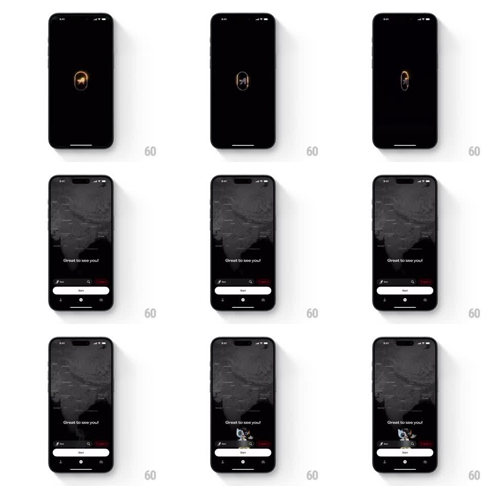

Media
Frame-by-frame

Rebuild this animation 1:1: Any Distance's splash - a glowing 3D capsule logo spins and pulses on black, then fades into the dark map dashboard where a bouncy little astronaut mascot pops up over the Start button.

Rebuild this animation 1:1: Any Distance's splash - a glowing 3D capsule logo spins and pulses on black, then fades into the dark map dashboard where a bouncy little astronaut mascot pops up over the Start button. ## Integration Integration: stack-agnostic spec - springs given as stiffness/damping, timed motions as duration + curve; map every value to your framework and animation library of choice. ## Scene Splash: pure black, a small capsule-shaped 3D logo at center with an orange glowing mountain mark inside. Dashboard: dark grayscale map filling the screen, "Great to see you!" greeting, a white Start button at the bottom, a thin activity-type bar (Run, search, Ready) above it, and page dots. The mascot: a small cartoon astronaut that appears between the greeting and the Start button. ## Motion spec Pattern: pulsing logo splash into a mascot-pop dashboard reveal. - The logo rotates slowly (rotationY continuous, ~4s per turn) while its orange glow pulses (glow radius and opacity breathing, 2s sine). - After ~1.5s the splash crossfades to the dashboard (400ms); the map fades in slightly zoomed (scale 1.05 to 1.0, 600ms, ease-out). - Greeting and Start fade up (translateY 10px to 0, opacity, 250ms, 100ms apart). - The mascot pops in last: scale 0 to 1.0 with a bounce (spring stiffness ~320, damping ~16), then idles with a small bob (translateY +-5px, 2s sine). ## Calibration - The splash is short - under 2 seconds. The logo glow is the only light on screen; keep everything else black. - The mascot pop is the hello; it must come after the UI settles, not during. ## Reduced motion Static logo for 800ms, plain crossfade to a fully composed dashboard; no mascot pop. ## Don't miss - The map is grayscale and dark - the only warm color on the dashboard is the mascot. - The Start button is white and pill-shaped, the brightest element; hierarchy is Start over everything.